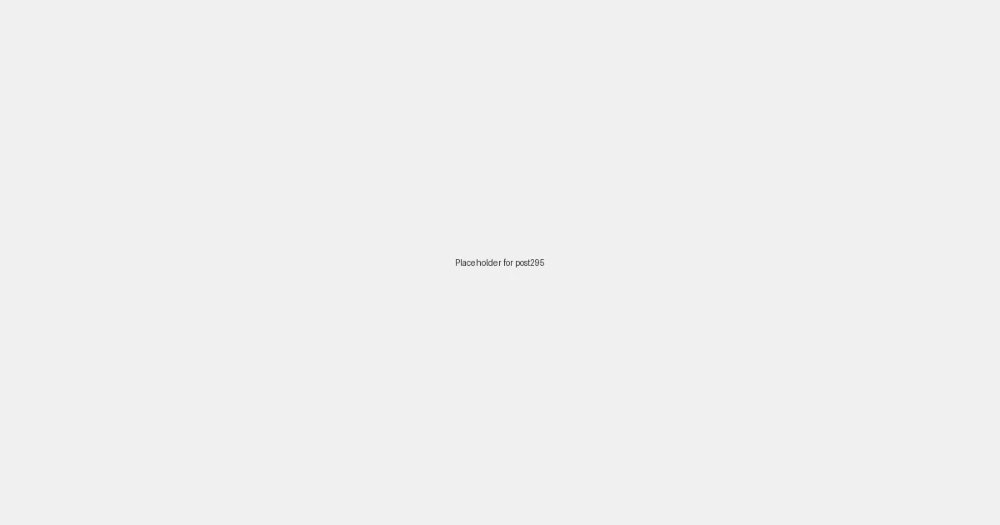

Local SEO for Yoga Studios: Finding Your Zen in Local Search in 2026

For yoga studios, creating a serene and welcoming space is paramount. But equally important is ensuring that potential students can find that space amidst the digital noise. In 2026, a focused Local SEO strategy is key to bringing more practitioners through your doors, helping them find their zen, and building a thriving community. It’s about making sure that when someone searches for “yoga classes near me,” “vinyasa flow [city],” or “meditation studio [neighborhood],” your studio appears prominently and invitingly.
Why Local SEO is Vital for Yoga Studios in 2026
Yoga is often a deeply personal and location-specific practice. Students look for studios that are convenient to their home or work, offer suitable class times, and foster a sense of community. Local SEO directly connects your physical studio with these local search queries, transforming casual online browsers into dedicated members of your yoga family. It’s about cultivating connection in the digital realm to foster it in the real world.
Key Local SEO Strategies for Yoga Studios in 2026
1. Master Your Google Business Profile (GBP)
Your Google Business Profile is your studio's most public online face. Optimize it meticulously:
- Accurate N.A.P.: Ensure your studio’s name, address, and phone number are perfectly consistent everywhere online.
- Categories: Use "Yoga studio" as your primary category, and add specific secondary categories like "Pilates studio," "Meditation center," or "Fitness center" if applicable.
- Hours of Operation: Keep class schedules, open hours, and special event times up-to-date.
- High-Quality Photos & Videos: Showcase your beautiful studio space, instructors in action, and happy students. Visuals convey the atmosphere and practice style.
- Services: List all your offerings, from specific yoga styles (e.g., Hatha, Ashtanga, Yin) to workshops, teacher trainings, and private sessions.
- Posts: Announce new classes, special promotions, guest instructors, or community events.
2. Build a Stellar Online Review Reputation
Positive reviews are gold for local businesses. Encourage satisfied students to leave reviews on your Google Business Profile, Yelp, and other wellness platforms. Respond gracefully to all reviews, both positive and constructive, showing your dedication to student experience.
3. Craft Localized Content that Resonates
Create content that speaks to the local community and highlights your studio's unique offerings:
- Blog Posts: Write about the benefits of yoga for local residents, highlight local wellness events, or feature student testimonials from your neighborhood.
- Community Pages: Develop dedicated sections on your website for specific towns or neighborhoods you serve, emphasizing your local connection.
- Event Listings: Clearly list all upcoming workshops, retreats, and special classes, ensuring they are geo-tagged and easily discoverable.
4. Cultivate Local Citations and Backlinks
Ensure your studio's N.A.P. is consistent across all online directories (local health and wellness sites, community boards). Seek high-quality backlinks from local wellness bloggers, community organizations, and local news outlets. Partnering with local health food stores or gyms can also yield valuable mentions.
5. Mobile-Optimized Website Experience
Most yoga searches happen on mobile devices. Your website must be fast, responsive, and intuitively designed for smartphones and tablets. Class schedules, pricing, and booking options should be easily accessible from any device.
6. Engage on Local Social Media Channels
Actively participate in local Facebook groups related to health, wellness, and community events. Share inspiring photos and short videos of classes on Instagram, using local hashtags. Engage with your followers and build a vibrant online community that reflects your studio's ethos.
Unrolling Your Mat to Local Success
In 2026, local SEO is more than just a marketing tool for yoga studios; it's an extension of your mission to connect with and serve your community. By diligently implementing these strategies, your studio can significantly enhance its local visibility, attract a growing number of dedicated students, and continue to spread the transformative power of yoga. Begin optimizing your local digital presence today and watch your community flourish!